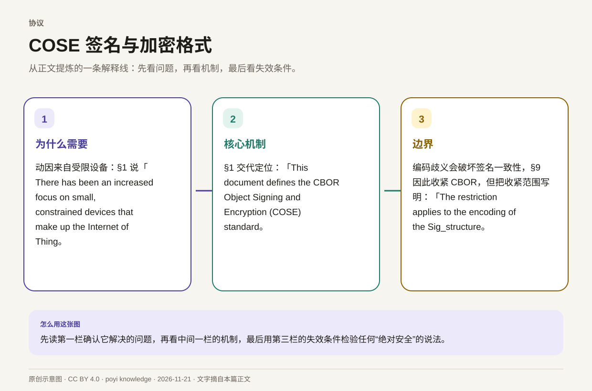
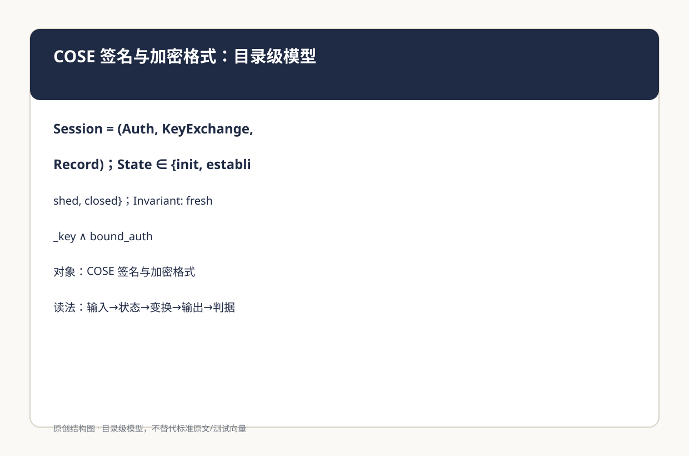

原理与机制
协议：COSE 签名与加密格式（CBOR Object Signing and Encryption）。§1 交代定位：「This document defines the CBOR Object Signing and Encryption (COSE) standard, which does the same thing for the CBOR encoding format.」摘要说明范围包括签名、MAC、加密与密钥表示，并补充「This specification additionally describes how to represent cryptographic keys using CBOR.」§2 给出统一的数组结构：「All of the message structures are built on the CBOR array type.」前三元素固定为「The protected header parameters, encoded and wrapped in a bstr.」「The unprotected header parameters as a map.」以及内容——「The content is either the plaintext or the ciphertext, as appropriate.」

为什么重要
动因来自受限设备：§1 说「There has been an increased focus on small, constrained devices that make up the Internet of Things (IoT).」并指出「A need exists to provide message security services for IoT, and using CBOR as the message-encoding format makes sense.」§1.3 列出与 JOSE 的设计差别：「A single overall message structure has been defined so that encrypted, signed, and MACed messages can easily be identified and still have a consistent view.」「Binary encodings are used, rather than base64url encodings, to encode binary data.」「The authentication tag for encryption algorithms has been combined with the ciphertext.」§2 则强调解析代码复用：目标是让不同类型安全消息共享大量处理逻辑。
应用与实例
§2 列出四条识别消息类型的路子：「Identification of which type of message has been presented is done by the following methods:」第一条靠上下文「The specific message type is known from the context.」第二条靠标签「The message type is identified by a CBOR tag.」第四条依托 CoAP 的内容格式选项。§4.2 给签名单签的标签——「A tagged COSE_Sign1 structure is identified by the CBOR tag 18.」§5.2 给单接收者加密——「A tagged COSE_Encrypt0 structure is identified by the CBOR tag 16.」§3.1 规定算法字段必须被认证：「This header parameter MUST be authenticated where the ability to do so exists.」§4.4 定义待签名的规范化字节串：「In order to create a signature, a well-defined byte string is needed.The Sig_structure is used to create the canonical form.」其上下文串包括「“Signature1” for signatures using the COSE_Sign1 structure.」§7 定义密钥图：「The element “kty” is a required element in a COSE_Key map.」

边界与攻击面
编码歧义会破坏签名一致性，§9 因此收紧 CBOR，但把收紧范围写明：「The restriction applies to the encoding of the Sig_structure, the Enc_structure, and the MAC_structure.」——不是整条 COSE 报文的通用要求。在此范围内，「Encoding MUST be done using definite lengths, and the length of the (encoded) argument MUST be the minimum possible length.」并举例「This means that the integer 1 is encoded as “0x01” and not “0x1801”.」§12 给出两条密钥警告：「Use of the same key for two different algorithms can leak information about the key.」以及「Use of “direct” as a recipient algorithm combined with a second recipient algorithm exposes the direct key to the second recipient」。§3.1 提醒密钥提示不可靠：「Applications MUST NOT assume that “kid” values are unique.」§1 还记录一次因安全性质描述错误而做的删除——反签名原先对 COSE_Sign1 的描述不正确。
历史与背景
RFC 9052 署名 J.Schaad（August Cellars），2022 年 8 月发布，头部标「STD: 96」与「Obsoletes: 8152」。§1.2 列出与旧版的变化，第一条是「Split the original document into this document and [RFC9053].」§1.4 解释为何结构用散文而非 CDDL 规范化描述：「When COSE was originally written, the Concise Data Definition Language (CDDL) [RFC8610] had not yet been published in an RFC」。
逐步示例与核验
形式模型与复算步骤
[\mathrm{Adv}^{\Pi}_A(\lambda)\le n\cdot\mathrm{Adv}^{\mathrm{prf}}F(\lambda)+\varepsilon{\mathrm{aead}}(\lambda)]
COSE 签名与加密格式的公开参数、密钥/随机数与消息；变量说明：Π 协议，A 敌手，n 会话数，PRF/AEAD 为底层原语。1.把协议消息序列写成状态机。2.用混合论证逐个替换原语。3.把剩余优势归约到 PRF/AEAD 安全。边界：公式只覆盖已登记的参数与假设；参数取值、标准版本和实现细节仍以来源为准。
参考出处
- Wikipedia search entry for COSE 签名与加密格式. https://zh.wikipedia.org/w/index.php?search=COSE%20%E7%AD%BE%E5%90%8D%E4%B8%8E%E5%8A%A0%E5%AF%86%E6%A0%BC%E5%BC%8F
- Handbook of Applied Cryptography (Menezes, van Oorschot, Vanstone). https://www.cacr.math.uwaterloo.ca/hac/
- RFC 9052: CBOR Object Signing and Encryption. https://www.rfc-editor.org/rfc/rfc9052
- Published standard/RFC for COSE 签名与加密格式. https://www.rfc-editor.org/rfc/rfc9052